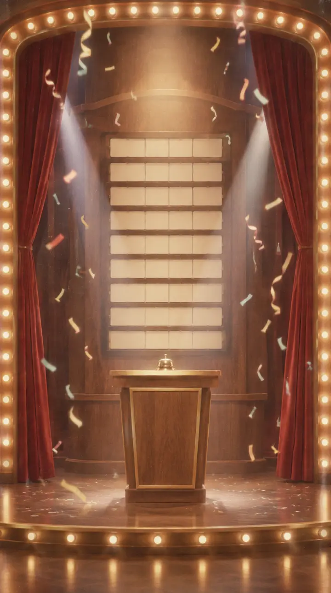

1950년대, '컴퓨터'가 기계가 아니라 손으로 계산하던 사람의 직업 이름이던 시절입니다. 평소 화면은 계산실과 강의실, 신기록을 세우는 순간만 퀴즈쇼 무대로 바뀝니다.
브레인 짐기억과 계산의 훈련소 · 가제
어제 자네는 여든둘을 떠올리는 데 3.4초가 걸렸네. 오늘은 그렇게 느렸던 스무 개만 다시 해 보세. 15분이면 충분하네.
홈 · 아래로 굴리면 목록 카드가 서랍에서 꺼내듯 올라옵니다. 배경 그림은 나중에 짧은 반복 영상으로 바꿀 자리입니다.
문제 카드는 가만히 있습니다. 연출은 가장자리와 오른쪽 위 계수기에서만 돕니다.
측정 화면 · 맞히면 타자기 종이 "땡" 울리고 연속마다 한 음씩 올라갑니다. 5·10·20·50연속에서 계수기 둘레 전구가 켜집니다. 틀리면 계수기가 0으로 되감깁니다.

결과 · 공항 글자판처럼 숫자가 촤라락 넘어가고 금별이 한 장씩, 마지막에 "합격" 도장이 쾅 찍힙니다. 신기록이면 성적표 뒤로 퀴즈쇼 무대가 켜집니다.